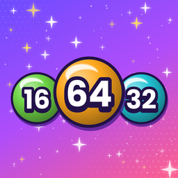

Drop, Merge & Hit the Jackpot
Found a bug, have a question or an idea for the game? We’d love to hear from you. Send us an email and we’ll get back to you as soon as we can.
tanaltiok@outlook.comPlease include your iPhone model and iOS version if you’re reporting a problem.
Drag to aim and release to drop a ball into the box. When two balls with the same number touch, they merge into one bigger number (2 + 2 = 4, 4 + 4 = 8…). Keep the balls below the red line at the top of the box. If they pile up past it, the game is over.
You start with one of each. When a power-up runs out, you can watch a short optional video ad to get more.
After a game over you can watch an optional video ad to clear the top of the box and keep playing. You can revive up to 3 times per game.
Tap Themes on the main menu to choose from 6 themes. Tap Settings to turn sound, music, vibration and visual effects on or off.
Yes. Your current game and best score are saved on your device automatically. Tap Play to continue where you left off.
Go to Settings → Privacy & Security → Tracking on your iPhone and turn off tracking for Number Merge. You’ll still see ads, but they won’t be personalized.